来源：https://oee5lr7gsk.feishu.cn/docx/IoHgdLSmxoTou3xe72tceHUQn4b
圈友们好，我是根源，2020年四月加入的生财。
目前已获得20篇精华帖成为资深传术师，成功组局 7 场，担任时间管理的航海教练。
现在主要的项目赛道是知识付费。有一个自己的小品牌：小源说说。
通过知识付费（2022年初正式转型）、以及私域运营，打造自己的課程体系，目前已达成大概两千人规模的付费人次，平均年收入七位数左右。
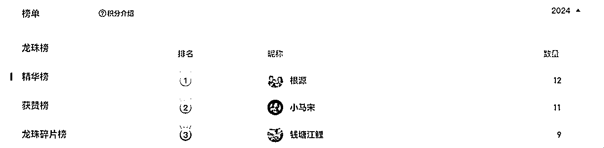
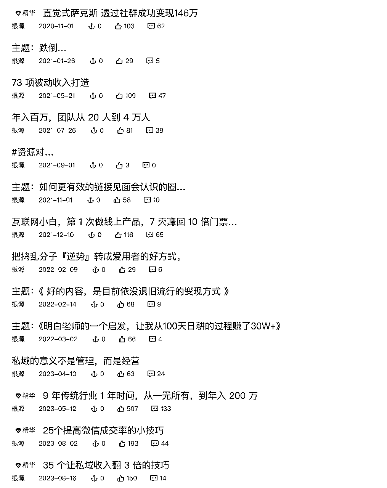
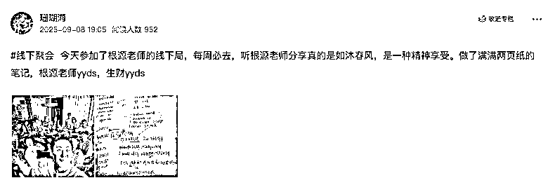
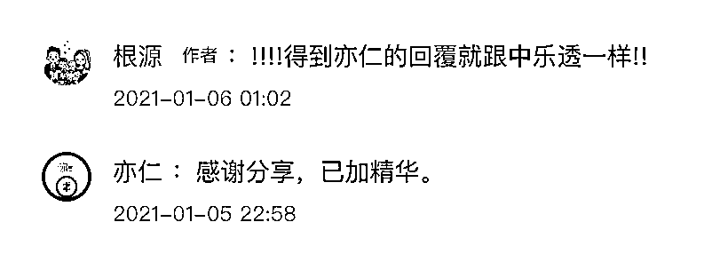
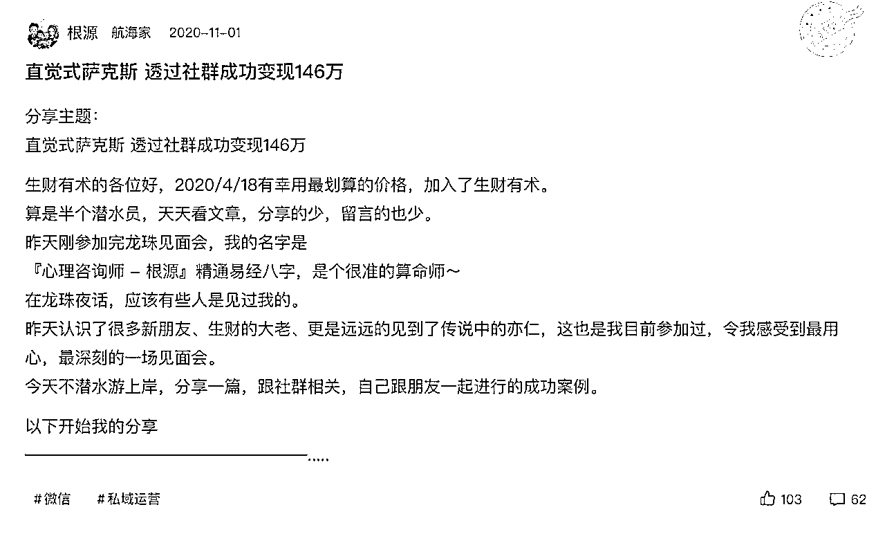
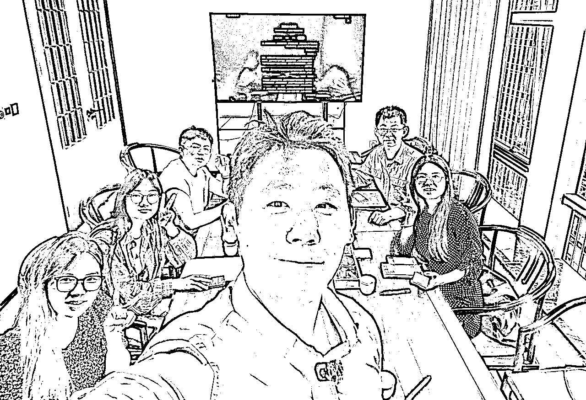
这篇文章，我想与你分享一段从负债百万到稳定变现的真实旅程。它既不励志，也不鸡汤，甚至有些“笨拙”，但它足够真实，因为每一步都是我用双脚亲自走出来的。
时间拉回 2018 年，那是我人生的谷底，曾引以为傲的四万人团队一夜崩盘，收入从每月 20 万骤降到 3000 块，身上还背着百万负债。
更让人焦虑的是，我的大儿子也在那时出生。当一个男人在新的城市没有任何人脉，过往的成功经验瞬间归零，甚至连下一顿饭都要精打细算时，要如何重新开始？
我将过去 13 年的销售和培训经验全部打碎，用最原始、最踏实的方法重新上路。
这篇文章，记录了我如何用超过 1000 次的线下见面，一步步建立新的人脉圈；如何通过社交的力量，让别人主动找到我，并最终构建起自己的知识付费体系。
你将看到的，不只是一段逆风翻盘的故事，更是一套我亲身验证过的“脱困方法论”。从心态的调整、目标的设定，到每一次微小的迭代修正，再到如何在一个像“生财”这样的高质量社群里，从一个“小透明”逐步建立起自己的影响力。
如果你也正处于迷茫或困境之中，希望我这段踩过所有坑、熬过所有苦的经历，能给你带来一丝启发和一股力量。让我们一起，用最真诚的行动，换来自己喜欢的生活。
以下就进入正题啦！
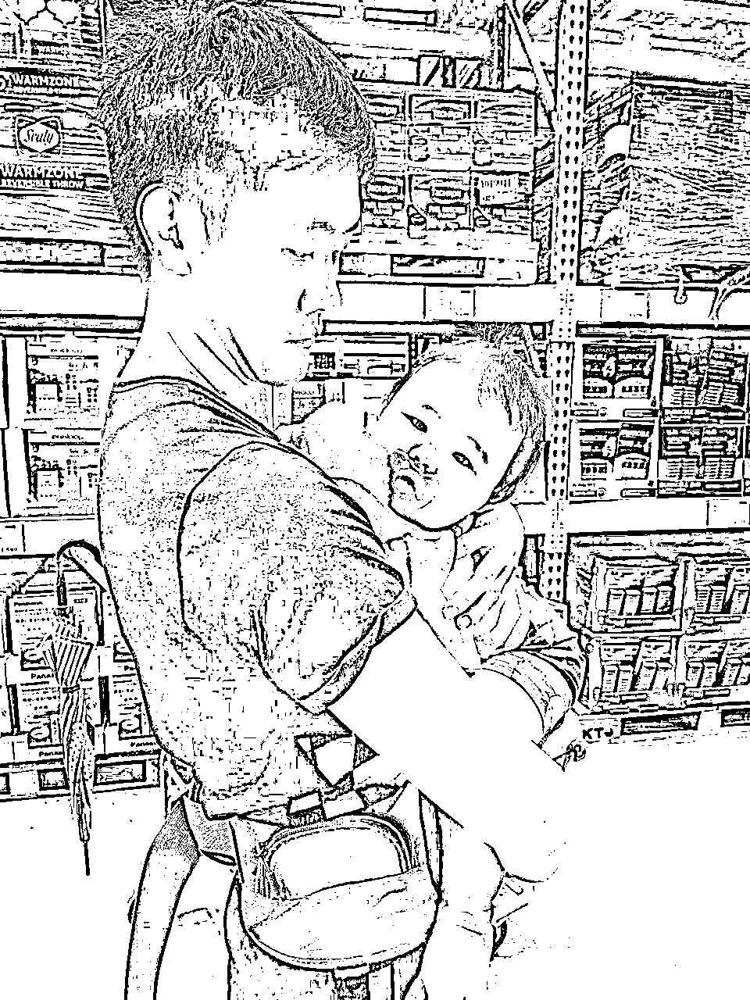
（孩子在状况最差的时候出生了）
我最自豪的标签就是：我是一个曾经跌倒过，但又重新站起来的人。
2018年，是我人生中印象最深刻的一年。那一年，我的4万人团队崩盘，收入从每月20万骤降到每月3000元，还背上了百万负债。同时，我的大儿子出生了。那段时间，我和老婆几乎每天都在吵架。
我们来到一个新城市，没有任何人脉，也没有名单资源，甚至不知道未来能做些什么。这就是我2018年的状态。
我的老师曾经跟我说过：
只有在谷底的时候，人才能真正证明自己是否有创造力。
那一年真的特别苦。，因为曾经拥有过好生活，又正好赶上孩子出生，我很清楚，想回到过去的生活状态，单靠当上班族肯定做不到。所以那时候，我暂时加入一家保险经纪公司，成为保险代理人。
但业务工作在初期几乎赚不到钱，尤其是没有人脉、也没有信心。于是我和老婆分工：她去找一份工作，我继续做业务员，重新积累人脉，把团队带起来。
人在困顿的时候，一定要认真思考：
过去是用什么方式取得成功的。先把过去的成功经验复制一遍，过程中再微调和修正。
虽然失败会让人对过去失去信心，甚至否定曾经做过的一切，但毕竟那些是自己亲身经历过的成功。所以，当想要重新爬起来时，一定要先找回过去的成功方式，重新模仿一次自己，这是一条再次通往成功最快的路。
我是销售员，知道做销售一定可以赚钱，但要把销售做好，首先得想办法认识更多的人。
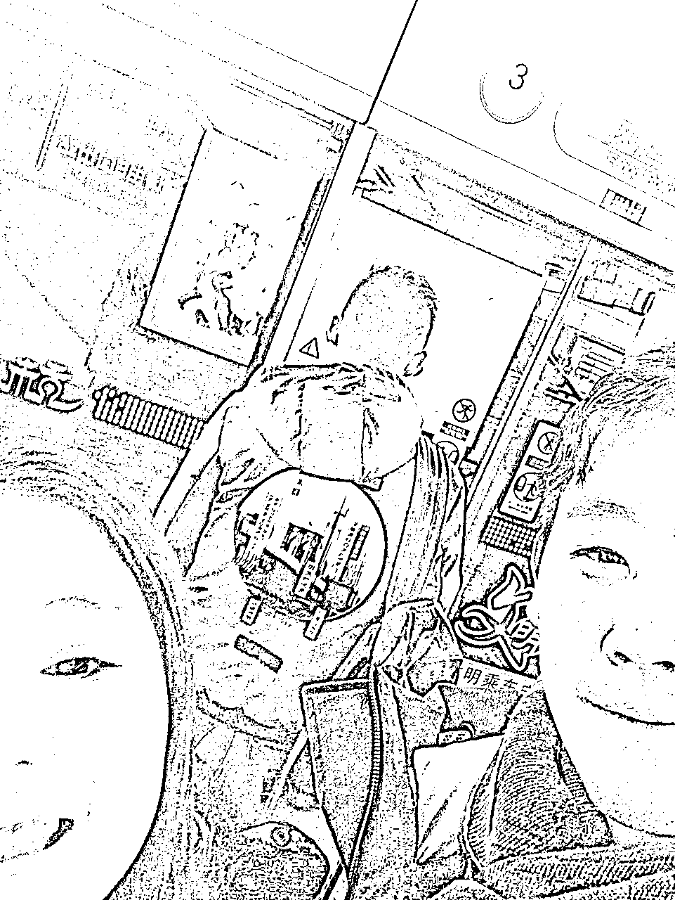
（当时的出行，只能搭地铁，因为最便宜，根本没有多余的钱打车）
以前我的销售经验主要在线下，不管是发传单、陌生开发，还是去星巴克认识新朋友，然后加微信。
我印象最深的是，每周至少有三天，我会在不同的星巴克待超过六个小时，只为认识那些独自喝咖啡的新朋友。虽然被拒绝了很多次，但线下见到人，能多聊聊，我觉得比线上更踏实。
杭州很不一样，因为这里的互联网特别发达。有朋友建议我在线上认识新朋友，效率更高。线下一天能见多少人？线上加好友几乎没有限制，可以用“摇一摇”，甚至还能去淘宝买群，加群里的好友。这些方式确实比线下见人更有效率。
于是我开始每天固定用一个小时“摇一摇”，还用一块钱买一个群，买十个还能送一个。也是那时候我才知道，原来微信加好友每天是有限制的。一天主动加超过五十个人，就会被禁止继续加好友。加了好友后，我也不知道怎么聊，对方也不太理我。
后来才发现，淘宝卖的群其实群里的人都差不多。这个方式我大概用了将近半个月，从“摇一-摇”、附近的人，再到淘宝买群。
半个月下来，坦白说真的没什么成效，也没有遇到可以深入交往的人。接着，我又尝试了交友软件，从探探到陌陌。通过这两个软件，我认识了很多特别的人，但依旧没有产生实际的价值。因为那时候我内心一直觉得线上交朋友是特别没效率的。
于是，我问了一个朋友，杭州有没有什么更好的线下认识人的场景？他告诉我，杭州有很多免费活动，建议我去参加，并推荐了一个APP。下载了这个APP后，我发现人生开启了一个新大陆，里面有好多不同主题的免费活动。
那时候的我只能参加免费活动，因为根本没有钱可以花在打车或活动费用上，穷的时候所有的钱都得斤斤计较，生活特别艰苦。每天只能吃两餐，中餐点的麻辣烫，还会让老板多加一点汤，晚上可以用汤来煮粥。
穷的时候，每一笔钱都得精打细算。因为省下的每一笔，都是每个月的保命钱。
因此，我只能挑选免费的活动。当时对于参加活动的经验还没那么丰富，都选那种一两百人的创业主题，选这种活动的想法特别单纯，就因为人多，人多就能认识更多人。
我给自己设定了三个目标：
那时，我从事保险行业，见客户的目的是寻找机会销售保单。同时，我作为心理咨询师，还懂八字，偶尔也接一些算命的单子。
基于过去的成功经验，我深知：
从0到1的关键在于重复做正确的事情，然而，初期重复做这些事并不一定会立即见效。不出成绩并不意味着事情不对，而是正反馈尚未显现。
从2018年6月到2020年1月，将近一年半的时间里，我每周固定参加线下活动，认识了将近3000人。现在回想起来，这个数据让我觉得自己还是挺厉害的。
每次活动，我都会优化自己的参与细节
在参加任何活动之前，我都会给自己设定几个要求：
这些都是当时对自己的要求，也是过去做销售时培养的一些好习惯。
每次活动，我都会调整自己的自我介绍，光是自我介绍我就至少修改了100次。到后期熟悉之后，我的自我介绍甚至能有超过十几种版本。
从一开始需要主动加好友，到后来只要我站起来自我介绍，就会有人主动想来加我。
我发现，想让自己获得一定的成绩其实并不困难，只要符合三个条件，人人都能走出困境，并且获得还不错的收入。
参加活动就是我的开始，每次活动结束后，我都会进行复盘，思考今天哪里需要调整，哪里需要修改。每年我都会给自己设定今年要赚多少钱的目标。
在这三个条件中，我觉得最重要的是微调。
因为在辅导这么多人的过程中，我发现大多数人有一个共性，那就是今天跟昨天一样，明天跟今天一样，后天跟明天又一样。
多数人（曾经的我）不会想让自己的今天与昨天有任何不同，导致每天就是重复地过。
但是，只要每天比昨天多调整一点，一年过后就代表我们改变了365次，两年过后就代表我改变了700多次。
别小看每一天就这么一点点的变化，这一点点的变化可能是我从：
出门不擦鞋子，到出门会把鞋子擦干净；从出门不带充电宝，到出门能够把充电宝带着，还会多带一条传输线，因为你认识的朋友可能会遇到手机没电的情况。
如果我们能借给他们充电宝，就能多产生一些关联。这些都是每天微调的过程，可以让自己变得不一样，也能让别人更方便，更让别人对你印象深刻。
当我大量参加活动差不多半年后，我认识了一个人生中很重要的贵人，这个贵人也是带我进入“生财有术”的贵人。
因为某次活动认识了大树，当时跟大树的关系其实挺普通的，就是加了微信，然后有一句没一句地闲聊。
突然认识一年后的某一天，大树约我出去喝茶，对于我来说，有人主动约我，不管是什么理由，我都会去。
那时候大树就跟我分享他在做些什么，以及他最近认识了一个很厉害的互联网社群，他说从来没有见过这么厉害的互联网社群，从来没有见过效率这么高的互联网社群。
他告诉我：“4月8号那一天，你一定要加入，那时候加入生财的金额是965元，还得抢票。
对于我来说，只要花的钱再多一点，我的成本就会更高一些。所以能省则省，这是很重要的观念，尤其人在穷困潦倒、现金流不稳定的时候，哪些地方能占一点便宜，就尽量多占一点，哪些举动可以少花点钱，那就尽量少花一点。
我还记得第一次加入生财，我是坐在马桶上面抢票的。当时八点一到，手机卡了将近三分钟，我很担心，如果要多花钱，我就亏大了。幸好最终还是以965元买到了加入生财有术的门票。
这一段，我描述的特别多细节，特别想表达的是：
人在穷的时候，所有的成本跟花销，不只要斤斤计较，花了后还得认真对待。
当时因为没钱，参加的活动几乎都是免费的，就算付费也可能只要60块、100块。出门也只能坐地铁、公交或骑共享单车，不太可能打车。
所以只要花钱，我都会非常认真地对待和使用这笔钱，付了钱之后，我就给自己设定了一个目标：
一定要想办法把这九百多的门票赚回来，至少得先把生财有术在干些什么了解清楚。
因此，我每天给自己设定的目标就是最少看十篇精华帖。虽然这样的阅读量并不多，但每天坚持看，累积时间长了，看的量就会很多。
在阅读的过程中，我发现竟然还有这样的生意模式，还能这么赚钱。原来我过去参与过的社群，竟然还能有商机。
那时候看完文章，我其实不太敢主动链接写文章的人。
倒不是因为没有能力，而是因为看完那么多文章之后，我发现生财有术跟我过去认识到的所有平台，以及花过的所有钱得到的课程都不一样。
因为不一样，我就得认真对待在这个群里认识每一个人的机会，以及我想链接某一个人的原因。
我有过销售经验，深知道交际是需要成本的。
即使我找到了作者，如果他开设了课程，再能力范围许可下，我一定会购买，因为我想与他建立联系，如果我主动约见某人，他点了咖啡，谁来支付？
这些都是成本。
认识一个人的成本可能至少需要一百多元。如果他有群或课程，费用可能从300到400元起跳。这些钱对当时的我来说，确实是一笔不小的开支。因此，我不敢轻易结识新朋友，尤其是在生财这么好的平台。
我想说的是：
认识的人不用太多，但如果真的想认识，再能力允许的状况下，付费是让对方愿意关注你最快的方式。
2018年和2019年，我深刻意识到，贫穷真的是一件特别可怕的事情。穷会带来很多连锁反应，比如夫妻吵架、心情不好、身体状况变差，每天都处在恐慌和焦虑中，晚上也睡不好。很多问题，其实都是因为穷。
但有个很有意思的现象，就是人在穷的时候，心里想的往往不是怎么去赚更多的钱，而是天天抱怨，甚至自怨自艾。这两年，我觉得自己做对了一件很重要的事情。虽然我也会抱怨，也会和老婆吵架，但我会在设定的工作时间内，一丝不苟地把当天安排的事情全部完成。只要是工作时间，我都会逼自己暂停吵架，因为现在得工作了。
不管晚上多累，那时候经常吵架，吵到半夜两三点，但早上七点半还是会准时起来开早会，绝不赖床。
只要是和赚钱相关的事情，我都不会打折扣，也不会拖延。我觉得这是年轻时取得过好成绩、在老师带领下成长所养成的好习惯。
从谷底爬起来，就是要熬。虽然熬的过程很痛苦，有将近一年的时间，真的没什么成绩，每个月再怎么努力，赚的钱也就是三五千块。
如果不是老婆先去找了一份稳定的工作，家里的生活根本就撑不下去。但也正因为在工作上我从不打折扣，每个季度我都能明显感觉到自己有一些变化，这种变化来自于身边认识的人和整体的质感都在提升。
那时候有个特别有趣的现象。以现在的标准来看，我认识的人其实都不算“对的人”。每天我都会问自己，为什么身边的人都这么奇怪？
后来回头看看自己，也就明白了，因为我本身也是个不太认真、成绩不好、挺奇怪的人。
慢慢地，我开始主动加别人微信，主动邀约他们出来喝咖啡。后来，情况发生了变化，变成有人会主动加我微信，主动跟我聊天，甚至主动问我能不能出来喝杯咖啡。那一刻我才意识到，自己又慢慢进入了一个不错的状态。
因为当有人主动想认识我，就说明他们觉得我也是个可以提供价值的人。
当时因为领路人大树认识很多人，他介绍了玛丽阿姨给我认识，有一次看到玛丽阿姨在朋友圈发她在跑步，我也好奇问了她，然后她就把我拉进了一个跑步群。
接着，我就在这个跑步群里认识了涛哥、大周、刺猬、...，还有很多生财的朋友。
从这一刻开始，我才第一次真正感觉到，自己踏入了生财的圈子。我常跟一些新朋友开玩笑，说我是“跑”进生财圈的。
因为当时涛哥的跑步群有一个押金打卡机制，每40天至少要练37天、跑5公里。如果请假超过三天，押金就不退，会变成奖金池，分给那些跑步全勤的人。
坦白讲，当时那1000元的押金对我来说是一笔巨款，但不参加，又感觉融入不了这个群。所以我那么认真地跑步，目的只有一个：肯定不能让我的押金被扣掉。
那时，我天天都会花时间在群里跟每个人聊天，虽然当时的我没什么成绩，但固定时间出现总是可以的。
不管谁在群里讲话，我总会接个两三句。接着，他们也开始慢慢认识我。有些新进来的人发现，我跟很多人都接得上话，他们也会误以为我好像也是大佬，因为我接话的对象都是群里的大佬。我也在这种狐假虎威的伪装下，认识了更多不同的生财圈友。
第二个转折点是在我看到生财机制里有一种东西叫龙珠，龙珠是什么？我其实也不太知道，但我知道当时一颗龙珠能卖8000。
好歹我过去也曾经有过一些经验，我就想着要不尝试把文章分享出来，看看能不能得到龙珠，所以我就发了人生第一篇帖子。
生财对新人特别友好，只要新人发的帖子内容写得还行，大概率都可以评选为精华，那时只要精华就一定是一颗完整的龙珠。
我还记得得到龙珠的那一天，心里可开心了，开心的不是评选为精华，而是我可以卖掉龙珠有8000块，这样一个月的生活费就有了。
也因为文章进了精华，就开始有人主动联系我。
通过不断加好友，我认识了越来越多的人。随着人脉的积累，我的业务也逐渐有了起色。手头的资金变得宽裕，每月能多出一两千块用于社交。
于是，我开始大量参加生财相关的活动，更多都是线下圈友组的一些小局。
2020年，也是我定义为在生财有术的筑基年。
这一年，我的生活逐渐稳定，结识的人脉质量也慢慢提升。我开始将过去的成功经验重新运用。
最大的感触是：
过去的成功经验并非无用，而是我尚未找到将其与现状结合的方法。经过不断的尝试坚持、还有重复，我重新找回了当时的状态和自信。
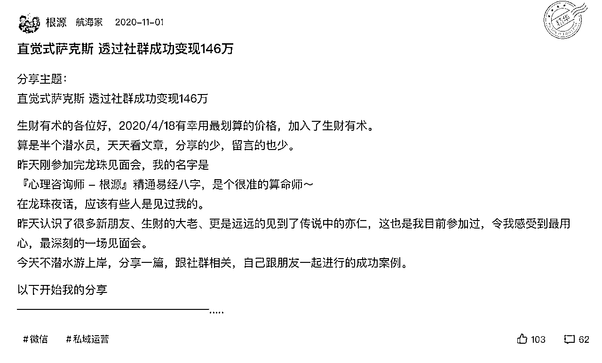
（2020年11月打的第一篇文章，那时候这篇文章打了将近半个月）
（没想过会有精华，当时发文章到得精华将近两个月）
2021年4月18日，我毫不犹豫地全款支付了生财的费用。
那时，我最大的进步是支付这一千多块时没有任何压力，甚至没有过多考虑。
尽管如此，我还是紧张地在八点准时抢票，生怕人数增加导致涨价。接着又因为玛丽阿姨的关系，她送了我一张龙珠俱乐部专属的线下会门票。那时我才知道，跑步群的许多大佬不仅是生财圈友，还是龙珠俱乐部的成员。
接著，我开始有了新的目标：如果能进入龙珠俱乐部该有多好。那时我才了解到，加入这个群有两个原则：首先，你必须拥有龙珠；其次，还需要有人推荐你入群。
每个阶段定不同的目标特别重要，因为目标是一种关注，有了新目标才能产生新关注，只有开始关注，我们才有机会慢慢的靠近设定的目标。
这一年对我来说特别重要，除了是我进入生财的第二年，同时也是我给自己设定要开始大量认识生财圈友的一年。
因为我知道：
想找到一个好项目，比起花时间看文章，更有效率的方式是大量的见人，项目跟想法都得是聊出来的。
这一年
这一年说丰富也挺丰富、但说无聊也挺无聊，每天就是找人见面、看文章、找人见面、看文章、找人见面、看文章、.....。
不断找人见面的过程中，就又能转介绍出新的圈友，就接著继续见面，因为开始写了几篇文章，线上又能有圈友主动加上我，然后生财办了线下活动，就把线上认识的圈友在线下面基，一直重复这样的过程。
然后每一个小细节，都会让自己尽量做到最好，多听、多问、多了解对方在做些什么，知道厉害的大佬有几百元的群，二话不说就是先打钱。
这一年我有个很重要的原则：
但凡透过生财认识的朋友进入的群，不管是免费还是付费，我一定会在群里面很活跃，想办法在规则内好好的输出、给出自己的价值、帮著活跃社群。
涛哥跑步群我没有偷懒过、修哥的复盘者联盟我的复盘肯定全勤、焦波的新圈友群我是新人任务王、......。反正只要进群，就认真的把这个群当自己家好好的善待。
这是一种良性循环，因为群主都希望群友可以多活跃、我只要能把活跃做好，然后回复的内容也都挺得体的，他就愿意再介绍新朋友给我认识，群里的人也会主动想认识我，我就能再认识更多人。
这一年，我最少又认识了将近700多个新圈友，很充实也很踏实。
我觉得从加入生财到第一个转折点，是写了第一篇文章。最开始入生财的时候我也很慌，我想大多数刚进生财的人都会觉得：
哎呀，怎么这么多人都这么厉害，每个人好像都有一定的实力，每个人都是大佬，尤其自我介绍里面又有这么多的成功案例、成功经验，总会觉得自己技不如人，但其实不是的。
我一直觉得所有的人都有一个属于自己的优点，但是当我们没有习惯性表达，没有习惯性透过写文章让更多人看见自己的时候，我们并不知道原来这东西它是一个优点。
因为每一个人的优点，在自己还没那么稳定的时候，只会觉得我身上只有缺点，没有优点、没有什么可取之处，这个其实是大多数人对于自己的误会。
最有趣的是，当我开始写了第一篇文章，很大的概率会有人主动的加我好友。
这时候就会有人说：我写的东西也没人看阿！
并不是这样的，我写第一篇文章的时候，当时文章还没拿到精华，加我好友的人就有这几类：
加我好友的人群中，第三、四类人占大多数，就跟我自己看文章一样，肯定会想认识比我厉害的人。
也就是不管在什么样的环境里面，一定有比你优秀的，也有比你稍微没有这么优秀的人。
一篇文章只要发出来，就会自然的吸引到该吸引的人进来。
这时候反馈就来了，在任何的环境里面，你一定会比部分的人要来的更优秀，这是一个很有趣的现象，就是你一定不是最差的，这个跟在学校考试不一样，学校考试会有最后一名，但是在一个超过万人以上的平台，你一定不是最后一名。
也就是你分享的内容肯定会有-一些人能感受到有共鸣，这种共鸣会有不同的阶段：
也就是不管这个人比你差、还是跟你一样、还是比你好。
只要你可以很好的、很认真的、很详细的把你人生中某一个过程，不管是项目还是经历都好，你就把它写下来，你一定能够吸引到很多的人来看。
当你越写越多，关注你的人就会更多，联系你的人就会更多，你可以结交的人也会更多。
曾经我也有过一种困惑，我手边也没有什么能拿的出手的项目，那我还能更新什么？
生财其实是一个很棒很包容的大社群，就是你有项目也能更新，不管是成功经验、失败经验，还是亏钱经验。但如果你没有项目，过去总有一些经验吧。
这经验一定要是项目吗？也不一定。
类似这些主题，都是可以写的
所以文章不代表一定得是项目，而是
人生中的某一段，自己觉得很深刻并且对自己很有帮助的经历就可以了。
这个「对自己有帮助」，不是对别人有帮助。因为如果这个内容你连觉得自己都没有帮助，那对别人就更不可能有帮助。
所以写文章其实最难的就是：我一开始我要先写我想写的，而不是写市场要什么或者生财要什么，这是一个最简单的开始。
所以如果说你从来没在生财发过文章，当你看到这，可以尝试着为自己在生财发第一篇属于你的帖子。
不管这个帖子是什么，只要能够有个三四千字，然后这个帖子你自己觉得对于你的成长经验特别有帮助，那就可以写，因为我也是用这种方法在生财有了开始。
写的过程也不用有太多的想法，也不用想着有谁要看、或能不能得精华、或有没有人点赞。
我觉得这都不是重点，重点是只要你觉得这篇帖子对于自我是有帮助的，那就写吧，然后养成一个习惯，每一周或者每两周给自己设定，我就是要在生财发一篇文章。
不管这个文章是什么，因为分享内容是一种习惯，就是我给自己设定的目标，当目标时间到了我就更新，这时候我就能够越写越多。
如果现在只是想着，哎呀，我没东西能写，当有这种想法，迟迟不动笔，那就真的一直没东西能写。
我在生财的第二个阶段，就是我在看众多项目的时候，因为我过去确实有一些好的经验，我觉得找项目的时候可以优先观看那一些过去我也曾经做过的事情，然后观察这个人，他是用什么样的方法来做一个我过去也曾经做过的事。
有可能他做的方法不一样，因为他比我更成功，又或者是他在做的细节跟我关注的细节不一样。
因为我在生财，与其说发掘项目，更不如说我找到了一个曾经我做过的事情，但是在生财我看到了一种完全不一样的经营方法以及商业模式。
那这个时候，我就跟自己说；
我也想做一个项目，那我想要找一个我曾经擅长的事情来做，所以我最终就选择了我想做知识付费，因为我过去有过培训经验，有过团队经验。但是我没有用过生财部分成功的人的方法来进行我过去的项目，等于是我用了一个新方法来做旧项目。
那我在做的时候其实不会觉得很别扭，是因为我以前做过，最少这个项目有一些东西我是熟悉的，那有一些不熟悉的我再学就行了。
我在生财的第三个阶段就是；我大量的认识人，这事情太重要了。
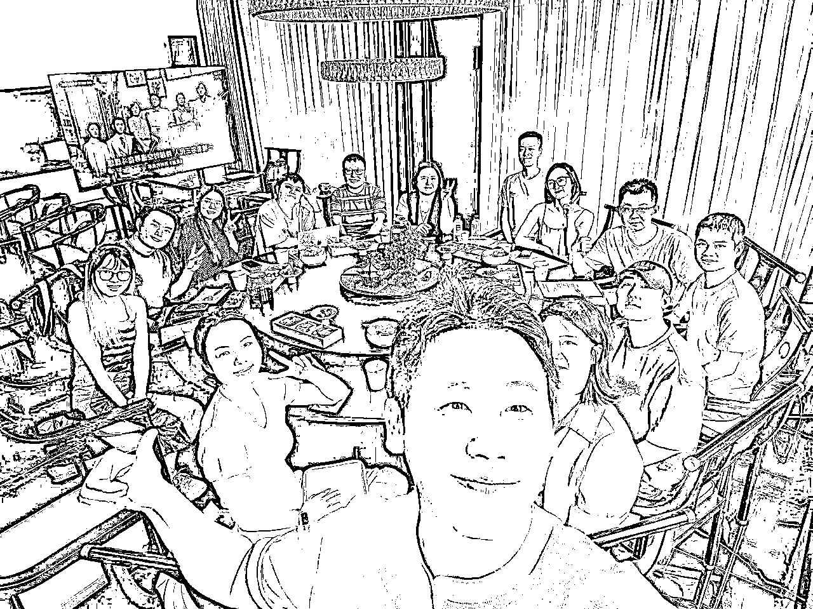
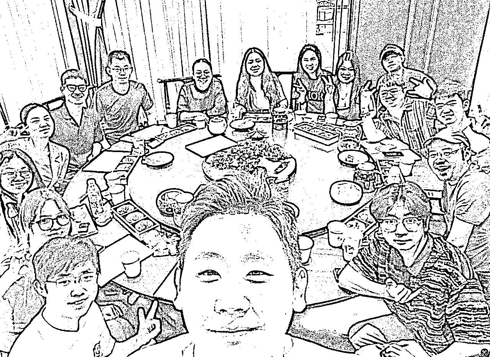
我换个讲法，不能说大量的认识人，而是我会在一个固定时间点里面认识定量的人，就类似每一周我一定要认识10个人，每一个月我就必须得认识40个人。
之所以会给自己这样子的设定，
就是我如果只纯看文章，很难在文章里面去找到我下一步要干嘛。但是当我能够跟很多人聊天的时候，我就可以通过聊天的过程去聊出接下来我想干什么。
这是个很有趣的调整。
就是第一阶段我重看，那看文章的目的，除了吸收新的知识、吸收新的认知，以及知道这个社群在干什么之外，最主要的是：
我要找到那一些我喜欢的文章风格。因为如果这个文章风格是我喜欢的，代表这个写文章的人，我应该也不会排斥。然后，我就想办法能够去结交这一类的人。
第二个是：我还可以结交在这个文章底下留言的人。
因为我喜欢这个文章，底下也有人跟我一样喜欢这个文章，那就代表我不止跟作者是有共鸣的，我跟这些留言的人也会有共鸣。
那留言的人跟作者谁比较厉害？大概率是作者一定比那些留言的人厉害。也就是如果我也在底下留言，我有很大的概率能在在这个圈子里面找到一些跟我也差不多的人，这个时候聊起天来，你就不会觉得别扭，也不会觉得有隔阂。
所以初期看文章就只是为了找到与自己有共鸣的人，然后结交！
这时候就是线下见面，开始加他们好友。因为知识星球有私信，你可以私信跟他说：
「我看到这个文章，你有留言，我觉得你的留言讲的特别好，不知道我能不能够跟你成为朋友？因为我也是刚进生财不久的圈友，我也想在这边认识一些很棒的人。那我觉得你的内容写这么好，你肯定也很棒。」
一般来讲，如果我们在发私信的过程，我们有礼貌一点，对方大概率是会同意的。那如果对方大概率会同意，我们是不是就能够再认识一个人？
圈子是需要更新的，新项目必须得有新圈子。
我以前是做线下培训的，我突然转成做在线知识付费，我会发现我过去的那些人，成交起来就特别费劲，甚至根本成交不了，因为他们买东西的习惯是在线下，但我卖了线上产品，他们是不容易购买的。
所以最少要给自己半年到一年的时间累积新的用户，以及累积新的朋友，创造一个新的圈子。
因为我在22年正式做知识付费的时候，购买我课程的人都是我那一年认识的人。
也就是花钱买我产品的人都是新朋友，因为只有新朋友他们才能接受我的新的项目跟商业逻辑。旧朋友是不容易接受的，他们会认为这就不是我以前的购买习惯，所以我可能暂时没有兴趣。
（第一篇精华到第二篇精华，中间将近两年，但还是持续写）
所以给自己这一年的目的有几个：
当认识的人多了之后，一定会产生一些附加的代价，最首当其冲的就是交际成本一定会变多。这个交际成本包含了跟他们出去可能有活动场地的AA、可能一起吃饭、可能你请别人喝茶。
最大的开销是你花钱去买你欣赏的人或想学习的人，他的课或者他的群。
我认为这个在交际的过程中是必然产生的成本，也是一个必须要花的成本，因为这个成本花了之后，可以让很多事情达到更高的效率。
今天你想链接一个你认为很厉害的人，你买他的课跟不买他的课，在他的世界里面你就是「普通圈友」跟「好圈友」，那你的身份就是普通圈友，跟「我们能够成为一个可以结交的人」这两种不同的身份。
不同的身份就会造成不同的相处，他会告诉你的东西也不一样。
那更大的重点是：
你会关注他的深度也不一样。你要想，今天我给一个人付钱，跟我不给一个人付钱，你会花更多时间关注在谁身上？肯定是关注那个你给他付钱的。
也因为会产生成本，所以如果现阶段的你是新手，或者是你跟当时的我一样，手边并没有这么多的成本可以支出在很多的课程里面，这时候一定要给自己设定一个多少钱是我能够花的极限。
可能一个月是1000块，或者一年是两万块都好，设定一个当下你能够支出的。
那这个支出的钱，有两种方法可以判断：
但凡这个钱只要超过我的成本，就假设我设定成本一年是1万，我今年花的钱已经过1万了，然后又有一个很棒的人、很棒的课想买，这个时候，我就会建议不要再花这个钱。
因为多花不代表会多成长。
有时候，人是控制不住自己的。我认为成长的心可以有，但是量力而为比什么都重要。
又或者是在预算之内，假设你想付钱的这个人，他的费用是5万块，可是你一年只有1-万呀，你就可以跟他谈，我能不能够分5年，每一年给你？我用分期的方式。这时候，你既能链接到他，同时又能够控制自己的成本。
我觉得控制成本是一件特别重要的事。
初期做副业会有一个很好玩的现象，副业赚了钱，但最终帐一算下来发现怎么没赚钱？
你可能副业赚了1万，然后能拿两万块去投资，就会认为，我既然要做副业，投资就一定是对的。当你重视成本的那一刻开始，就会尊重你买的每一个课。
再来一个是，买越多的群，就等于是没有群。
因为这个阶段的你，如果说你确实副业还没有这么的稳定，你觉得自己是一个新手小白，那么多的群，就象是进到大观园一样，你会不知道哪个群的内容重要，你还得同时照顾到所有的群都尽量活跃。
因为这个阶段，如果想去认识你想给别人付钱的人，代表这个人大概率比你优秀。
那你要怎么让这个人可以对于你产生好印象？
最少进了群之后，你得活跃吧，你得说说话，你得遵守规则，你得在里面多分享，你得让他感觉：
哎呀，你花钱买了我的群，你还这么的认真，代表你特别的认可我。
但如果一次性买太多的课或者买太多的群，根本学不过来，就会有种学到最后什么都没学到、然后又因为没学好天天恐惧，最后什么也得不到。
最适合的群数量，大概链接3~5个人就已经够你结交了。
因为你的活跃，进到群之后，还能在认识群里面的新朋友，群主发现你特别不错，也会推荐更多人认识你，这样的数量就有得你忙了。
初期我看生财的文章，会产生一种困惑：怎么大家赚钱好像都很容易？
赚钱容易，这本来就不是个客观事实，很多看起来赚钱容易的人，肯定走过好长一段很辛苦的时间，为了文章的阶段阅读，并不是每一篇文章都会把痛苦阶段花这么多时间写在里面。
也就是，一定要有个更正确的认知：赚钱本就是一件很不容易的事情。
但是看文章的时候，真的很容易产生这样的误会，接著真的落地干项目的时候，就会产生急躁的心情，为什么还没出结果、为什么还没变现、为什么大家都这么厉害就我迟迟没有前进、.....。
要如何突破这个状态，我自己用的是这样方式走过的。
设定三年12小周期目标，分别是
第一年：
第二年：（大原则，找到项目后，一年内都不换）
第三年：
这个是我自己的三年经历，以及加入生财的进度还有节奏，因為每個人的背景跟经历不同，但是加入生财三年，我觉得找到一个项目，并且赚到50万的纯利润，这并不是一件太困难的事情。
这过程中，有一个特别重要的观念，就是项目千万不要随意更换，选定了一个就认真做一到两年，真的不行再换，可以增加第二个项目，但是第一个项目千万不要更换，尤其，如果你也是一个小白，那就更不能随意更换。
然后就是，固定的事情重复做，重复做、重复做、.......。
这六年，用上面说到的方式，真的再生财收获了特别特别特别多不管是人、还是项目、还是荣誉！
希望这篇文章，能对刚好处于某个阶段的你有些启发，祝各位生财有术！
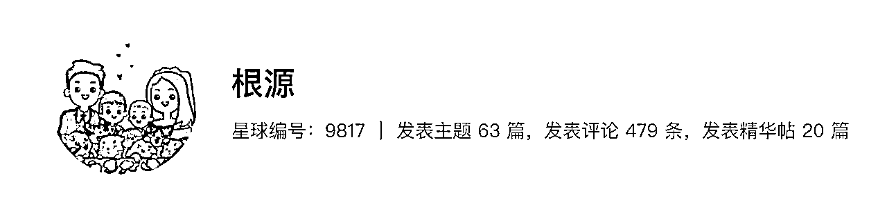
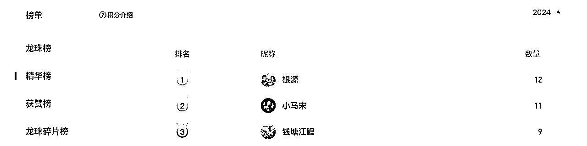
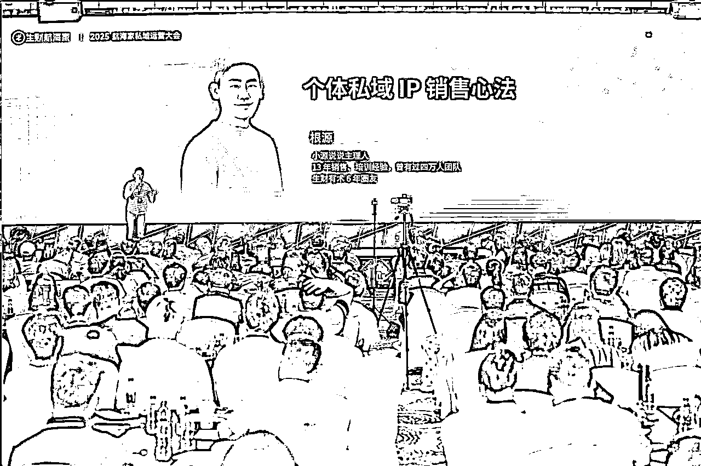